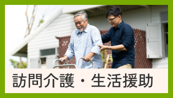
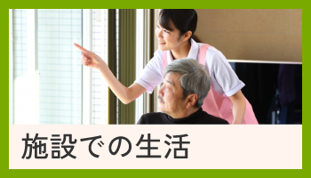

- 具体的には何するの？
- アレルギー食・刻み食
- 同居してても大丈夫？

- どんな人が利用してる？
- 送迎はある？
- 急な体調不良の時は？
費用・お支払いについて
ご利用されるサービス内容や要介護度により異なります。
ご見学・ご相談の際に、ご希望のプランに合わせた詳細なシミュレーションを作成し、丁寧にご説明します。
ご見学・ご相談の際に、ご希望のプランに合わせた詳細なシミュレーションを作成し、丁寧にご説明します。
基本的には以下の方法でお支払いいただきます。
詳細なお手続きについては、ご契約時にご案内します。
《支払方法》
・銀行口座からの自動引き落とし
・銀行振込
詳細なお手続きについては、ご契約時にご案内します。
《支払方法》
・銀行口座からの自動引き落とし
・銀行振込
訪問介護・生活援助について
お食事や入浴、排せつの介助といった「身体介護」、お掃除や買い出しなどの「生活援助」まで、幅広く対応しております。
利用者様の「自分らしく生活したい」という気持ちに寄り添ってサポートいたします。
利用者様の「自分らしく生活したい」という気持ちに寄り添ってサポートいたします。
同居されているかご家族様がいらっしゃる場合は、介護保険制度のルール上、一部の生活援助をご利用いただけない場合がございます。
ご家庭の状況をお伺いし、利用可能なサービスをご提案いたしますので、まずはご相談ください！
ご家庭の状況をお伺いし、利用可能なサービスをご提案いたしますので、まずはご相談ください！
はい、対応可能です。
利用者様のお体の状況やお好みに合わせて、安全でおいしく召し上がれるお食事の準備をいたします。
利用者様のお体の状況やお好みに合わせて、安全でおいしく召し上がれるお食事の準備をいたします。
ご相談・居宅介護支援について
もちろん大歓迎です！
見学だけでなく、ご相談だけでも大丈夫ですのでお気軽にお問い合わせください。
見学だけでなく、ご相談だけでも大丈夫ですのでお気軽にお問い合わせください。
はい、もちろんです！
介護保険の申請方法がわからないといった基礎的なご相談からお受けしております。
申請手続きのお手伝い・代行もいたしますのでお気軽にご相談ください！
介護保険の申請方法がわからないといった基礎的なご相談からお受けしております。
申請手続きのお手伝い・代行もいたしますのでお気軽にご相談ください！
市役所・地域包括支援センターなどで手続きが必要になります。
手続きのお手伝い・代行もいたしますのであわせてご相談ください！
手続きのお手伝い・代行もいたしますのであわせてご相談ください！
ご本人様とご家族様のご意向を丁寧にヒヤリングし、最適な介護サービスの組合せ（ケアプラン）を作成いたします。
また、各種サービス事業所との連絡や手配もすべて代行いたしますので、ご家族様の負担を軽減いたします。
また、各種サービス事業所との連絡や手配もすべて代行いたしますので、ご家族様の負担を軽減いたします。
施設での生活について
要支援1〜2、要介護1〜4の方を対象としております。
現在該当していない方でも見学・ご相談は承っておりますので、お気軽にご相談ください！
現在該当していない方でも見学・ご相談は承っておりますので、お気軽にご相談ください！
もちろんいたします！
契約時にご家族様との連絡・ご報告の頻度についてもお話させていただきます。
また、頻度の変更についても対応いたしますのでご安心ください。
契約時にご家族様との連絡・ご報告の頻度についてもお話させていただきます。
また、頻度の変更についても対応いたしますのでご安心ください。
対応エリア内でしたら、ご自宅まで送迎いたします！
《対応エリア》
○旭川市
・神居古潭、江丹別、東旭川、上雨紛、
西神楽地区を除く
○東神楽町
・ひじり野地区のみ
○鷹栖町
・市街地、北野地区のみ
《対応エリア》
○旭川市
・神居古潭、江丹別、東旭川、上雨紛、
西神楽地区を除く
○東神楽町
・ひじり野地区のみ
○鷹栖町
・市街地、北野地区のみ
基本的には常駐の医師と相談のうえ、必要があれば提携している病院を受診させていただきます。
なお、そのときの容態により他の病院を受診する場合がございますので、あらかじめご了承ください。
《提携先病院》
○森山病院
旭川市宮前2条1丁目1−6
Tel. 0166-45-2020
なお、そのときの容態により他の病院を受診する場合がございますので、あらかじめご了承ください。
《提携先病院》
○森山病院
旭川市宮前2条1丁目1−6
Tel. 0166-45-2020